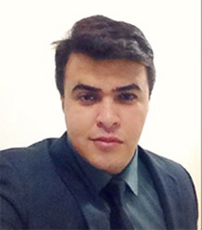

- Home
- >
- Currículo
Currículo
Dados Pessoais

Nome:
José Ivan Rabelo de Sousa
Data de Nascimento:
23/07/1983
Residência:
Fortaleza-Ce | Messejana
Idiomas:
Português (Nativo)
Inglês (Básico)
Sobre Mim
Olá me chamo Ivan tenho 34 anos sou de fortaleza/ceará, Iniciei profissionalmente na area gráfica especificamente com adobe photoshop com meus 17 anos, ha mais ou menos 1 ano e seis meses iniciei meus estudos em front-end e foi amor a primeira linha de codigo colorida, com indicação de um amigo fiz um curso de formação java e comecei a faculdade de analises e desenvolvimento de sistemas pela estácio fic em 2016 nesse momento estou estudando javascript e depois iniciar os estudo em react www.ivanrabelo.com
Educação
Curso em Andamento
Analises e Desenvolvimento de Sistemas/Estácio Fic
Habilidades
DESIGNER GRAFICO
Adobe Photoshop | Edição de Video
FRONT END
Html | Css3 | BootStrap | Javascript | Java
SOCIAL MEDIA
Instgram | Facebook
Experiência de Trabalho
2011-2014
Designer de Fotografia - Padrão Produções - Foraleza
2014-2015
Analista de Requisitos Jr - Controller TI - Fortaleza
2016-2018
Designer Frelancer - Fortaleza
Contato
Email: ivanrabelo85@gmail.com
Telefone: (85) 9 8959-4853
https://www.linkedin.com/in/ivan-rabelo-b3586210b
https://www.facebook.com/ivan.rabelo.10